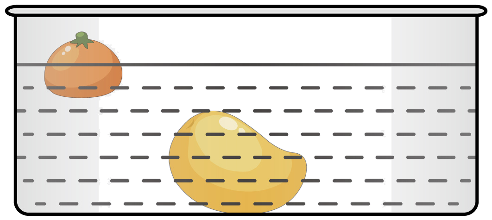

2023年北京中考物理 第14题14. 小京洗水果时，发现体积较小桔子漂浮在水面上，而体积较大的芒果却沉在水底，如图所示。下列说法正确的是（ ） A. 桔子的密度小于芒果的密度B. 桔子受到浮力大于它受到的重力C. 桔子受到重力小于芒果受到的重力D. 桔子受到的浮力大于芒果受到的浮力
 桔子漂浮在水面上，而体积较大的芒果却沉在水底，如图所示。下列说法正确的是（ ）浮力大于它受到的重力重力小于芒果受到的重力
桔子漂浮在水面上，而体积较大的芒果却沉在水底，如图所示。下列说法正确的是（ ）浮力大于它受到的重力重力小于芒果受到的重力